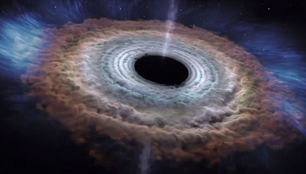

Чорні Діри
Що таке Чорна дира?
Чорна діра — це об'єкт, гравітація якого настільки сильна, що жодна з частинок не може його покинути. Одностороння межа у просторі-часі навколо чорної діри, яку не здатне перетнути навіть світло, називається горизонтом подій. Вважається, що всередині чорної діри існує сингулярність — нескінченно стиснута область, у якій гравітаційне поле стає нескінченним, а неперервна геометрія простору-часу зникає. Жодний з відомих нам законів фізики у цій точці не буде діяти.
Як утворюються Чорні діри?
Вчені вважають, що найменші чорні діри утворилися на початку Всесвіту. Зоряні чорні діри утворюються, коли центр дуже великої зірки руйнується. Коли це відбувається, це викликає наднову. Наднова — це зірка, що вибухає, вибух виносить частину зірки в космос. Вчені вважають, що надмасивні чорні діри утворилися одночасно з галактикою, в якій вони знаходяться.
Будова Чорної дири
Чорна діра має особливу будову, яка відрізняється від звичайних об'єктів. Основні складові частини будови чорної
діри включають:
1. Горизонт подій: Це межа або область, за якою гравітаційне притягання чорної діри настільки сильне, що ніщо не може втекти, включаючи світло.
Горизонт подій є точкою без повернення, коли об'єкт потрапляє за цю межу, він неминуче втягується в чорну діру.
2. Сингулярність: Це центральна точка чорної діри, де густота та кривина простору-часу стають
нескінченно великими. Вона є точкою відсутності об'єму та точкою маси. За горизонтом подій сингулярність розташована.
3. Акумуляційний диск: Це область навколо чорної діри, в якій матерія збирається перед потраплянням
в горизонт подій. Матерія, яка наближається до чорної діри, утворює обертовий диск, який нагрівається і виділяє енергію
у формі рентгенівського випромінювання.
4. Ергосфера: Це зона навколо чорної діри, в якій просторовий час обертається настільки швидко, що навіть світло не може залишити цю область. Частини частинок, що потрапляють в ергосферу, можуть бути відкинуті в просторі-часі з великою швидкістю, це називається ефектом пензля.
Міфи про Чорні діри
1. Чорні діри поглинають усе, що знаходиться поблизу
Це не правда. Гравітація чорних дір нічим не відрізняється від гравітації, скажімо, Сонця чи Землі. Просто вона більша через більшу масу об'єкта.
Якщо чорна діра має масу 10 Сонць, то і гравітація такого об'єкта буде, як у 10 Сонць. Об'єкти можуть перебувати на орбіті довкола чорної діри без ризику бути поглинутими.
2. Чорні діри мають велетенські розміри
Надмасивні чорні діри можуть мати діаметр декілька десятків мільйонів кілометрів. Якби Сонце можна було замінити на таку надмасивну чорну діру, то, ймовірно, її "край" навіть не дотягнувся б до орбіти Меркурія.
Чорні діри зоряної маси мають діаметр, який налічує десятки або сотні кілометрів. Наприклад, чорна діра, маса якої рівняється масі Сонця має діаметр близько 20 кілометрів.
3. Ми не можемо побачити чорну діру
Гравітація чорних дір така потужна, що навіть світло не може подолати її. Тому у звичному плані чорні діри для нас невидимі.
Та вчені знають інші методи, як виявити такі об'єкти. Наприклад, можна спостерігати за рухом зірок довкола невидимого об'єкту. Або спостерігати, якщо чорна діра починає поглинати зорю-компаньйона.
4. Чорні діри "висять" на одному місці
Легко уявити, що чорна діра - це фіксована точка в просторі-часі, яка захоплює всю прилеглу матерію та засмоктує її в себе. Але це не так.
Легко уявити, що чорна діра - це фіксована точка в просторі-часі, яка захоплює всю прилеглу матерію та засмоктує її в себе. Але це не так.
5. Чорні діри – це "дірки" у просторі-часі
Ми не знаємо напевне, але, ймовірно, що ні. Чорна діра – це не портал у світ потойбіччя, машина часу, чи вікно в Нарнію.
Чорна діра – це неймовірно компактний об'єкт Всесвіту, який стискає всю поглинуту матерію у сингулярність. Якщо дуже просто, то це точка простору-часу з нескінченною масою.
Ми не знаємо напевне, але, ймовірно, що ні. Чорна діра – це не портал у світ потойбіччя, машина часу, чи вікно в Нарнію. Чорна діра – це неймовірно компактний об'єкт Всесвіту, який стискає всю поглинуту матерію у сингулярність. Якщо дуже просто, то це точка простору-часу з нескінченною масою.